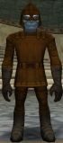

Uniforms and EquipmentShadowclan uniform is by tribe, and aids in visually identifying Shadowclan members' position in the Clan. Refer to Tribe Uniforms below for specific colors.
Shadowclan members are expected to be in uniform at all times.
Colored quest items or dropped items must be dyed the correct color before they are worn.
No robes are allowed.
We do not emblemize any of our equipment.
Our uniform rules are in effect all the time, even when you have just acquired a new item. For example, if you receive a blue cloak from a quest, or pick up green dropped boots, you cannot wear the item until it has been correctly dyed. It is a good idea to carry an extra vial of dye so that you can be prepared for the next time you pick up a colored item.
Shadowclan PropertyThe Shadowclan economy works differently from other guilds you may have encountered.
All money and items are property of the Clan as a whole, not the individual. The gold in your pocket and the equipment on your back all belongs to Shadowclan collectively, and must always remain in Shadowclan.
Shadowclan members do not sell, give, or trade items to anyone outside the Clan, even their friends or their own non-clan alts. All Shadowclan money and equipment stays within the Clan. If an item is worn out or no one in the Clan can use it, give it to a Clan crafter for salvage.
Shadowclan members do not charge other Clan members for hand me downs or dropped items, or ask for items in exchange. Give your old things freely to others in the Clan who can use them.
Shadowclan members do not accumulate wealth, since all funds belong to the Clan. Make sure your excess money and supplies are handed over either to Klan Makrs or to a Nob who can then distribute it appropriately.
Members of the Pomdung Tribe wear all dark brown. If you can not afford dark brown, use brown or, if necessary, light brown. Grundurz Tribe members wear all dark brown, except for dark grey boots.  Grundurz Nobs wear dark grey gloves in addtion to the standard Grundurz colors. Senior Tribe members also wear all dark brown, except they color their boots the color of their tribe. Senior Tribe Nobs wear the uniform of their tribe, but color their gloves as well as their boots. You can identify wargoths by the fact that they are completely covered in black. The clangoths wear all dark grey along with black gloves and boots.